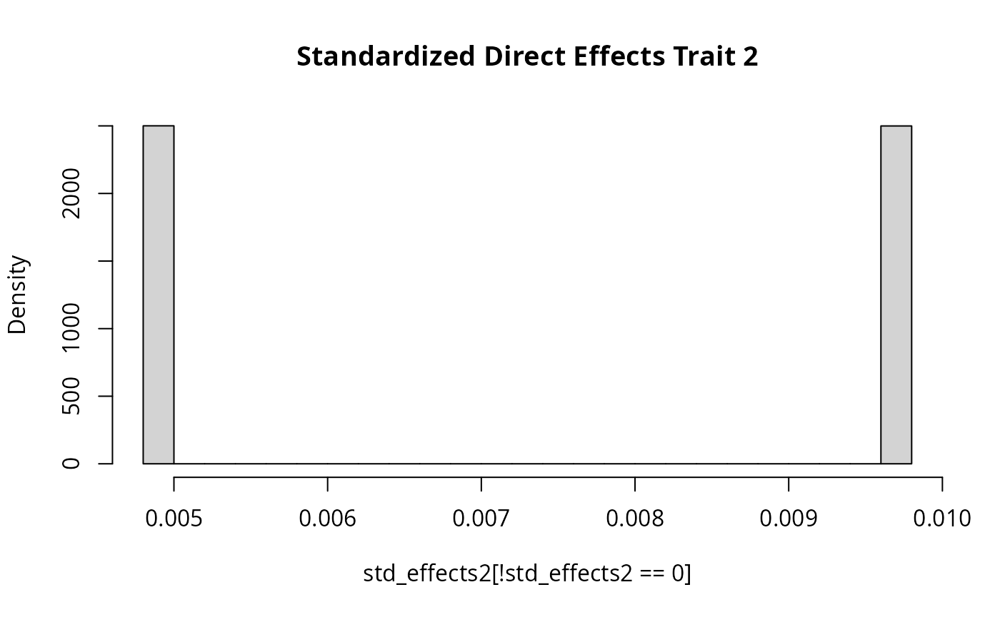

Controlling Effect Size Distributions
Source:vignettes/effect_distribution.Rmd
effect_distribution.Rmd
library(GWASBrewer)
library(dplyr)
#>
#> Attaching package: 'dplyr'
#> The following objects are masked from 'package:stats':
#>
#> filter, lag
#> The following objects are masked from 'package:base':
#>
#> intersect, setdiff, setequal, union
library(ggplot2)Introduction
GWASBrewer can support a range of effect size
distributions. At one end of the spectrum, effect sizes and direct
effect variants can be completely deterministic. At the other end of the
spectrum, both are random. There are multiple ways to control the
distributions of these random values demonstrated in this vignette.
Default Behavior
The default behavior of sim_mv is to sample effect
variants randomly by first randomly selecting direct effect variants and
then choosing the standardized effect size of these variants from a
normal distribution with mean zero appropriately chosen variance.
Standardized effects are effects with units of change in outcome on SDs
per unit increase in genotype SD. This procedure results in effect
variants spread evenly throughout the genome and per-allele effect sizes
that are inversely proportional to \(\sqrt{2
f_j (1-f_j)}\).
We demonstrate this by simulating data for only one trait. We will set \(N = 0\) since we don’t need the summary statistics for this demonstration.
set.seed(1)
sim_dat1 <- sim_mv(G = 1,
J = 50000,
N = 0,
h2 = 0.3,
pi = 1000/50000,
af = function(n){rbeta(n, 1, 5)})
#> SNP effects provided for 50000 SNPs and 1 traits.In this specification, we expect to have about 1000 effect variants.
Below, we plot the distribution of the standardized and per-allele
effects. Note that in this simulation,
direct_SNP_effects_joint and beta_joint are
the same because there is only one trait.
sum(sim_dat1$direct_SNP_effects_joint != 0)
#> [1] 1004
ix <- which(sim_dat1$direct_SNP_effects_joint != 0)
per_allele_effects <- sim_dat1$direct_SNP_effects_joint[ix]
effect_afs <- sim_dat1$snp_info$AF[ix]
std_effects <- per_allele_effects*sqrt(2*effect_afs*(1-effect_afs))
## first plot per-allele effects
hist(per_allele_effects, breaks = 30, freq = F,
main = "Per-Allele Direct Effects")
## next show that standardized effects are normal
hist(std_effects, breaks = 30, freq = F,
main = "Standardized Direct Effects")
curve(dnorm(x, sd = sqrt(0.3/1000)), add = T)
Controlling which Variants are Effect Variants
The pi argument to sim_mv gives the
probability that each variant is an effect variant. This can be a scalar
in which calse the probability is the same for all variants and all
traits, a vector giving a different probability for each trait or \(J \times M\) matrix. If pi has
matrix format then pi[j,m] gives the probability than
variant j has a direct effect on trait m. To
make the set of direct effect variants fully deterministic, set the
values of pi to be either 0 or 1. Using pi in
matrix format is incompatible with options pi_exact = TRUE
and sporadic_pleiotropy = FALSE.
Below, we use the matrix format to force all effect variants to be in the first half of the genome. This strategy could be used to designate regions with high concentrations of effect variants or assign different probabilities to variants with different features.
pi_mat <- matrix(0, nrow = 50000, ncol = 1)
pi_mat[1:25000,1] <- 1000/25000
sim_dat2 <- sim_mv(G = 1,
J = 50000,
N = 60000,
h2 = 0.3,
pi = pi_mat,
af = function(n){rbeta(n, 1, 5)})
#> SNP effects provided for 50000 SNPs and 1 traits.
plot(sim_dat2$direct_SNP_effects_joint)
In another application of this option, we can make the probability that a variant is an effect variant a function of the allele frequency.
af <- rbeta(n = 50000, 1, 5)
pi_mat <- matrix(0, nrow = 50000, ncol = 1)
pi_mat[,1] <- (1-pmin(af, 1-af))^4
# ensure there are still 1000 effect variants expected
pi_mat <- 1000*pi_mat/sum(pi_mat)
sim_dat3 <- sim_mv(G = 1,
J = 50000,
N = 60000,
h2 = 0.3,
pi = pi_mat,
af = af)
#> SNP effects provided for 50000 SNPs and 1 traits.To verify that we observe the desired effect, we plot the proportion of effect variants by bins of minor allele frequency.
x <- seq(0, 0.5, length.out = 100)
maf <- pmin(af, 1-af)
snp_dat <- data.frame(maf = maf,
is_effect = sim_dat3$direct_SNP_effects_joint !=0,
maf_cat = cut(maf, breaks = x),
maf_cat_order = cut(maf, breaks = x, labels = FALSE)) %>%
group_by(maf_cat) %>%
summarize(n = n(),
n_eff = sum(is_effect),
maf_min = first(maf_cat_order)) %>%
mutate(eff_prob = n_eff/n)
snp_dat$maf_min <- x[snp_dat$maf_min]
with(snp_dat, plot(maf_min, eff_prob))
Controlling Effect Size Distribution
To sample standardized effects from a distribution other than the
normal distribution, we use the snp_effect_function
argument in sim_mv. This argument can accept a function for
randomly sampling from any scale family distribution. The function given
to snp_effect_function must accept three arguments,
n, sd, and snp_info. The function
will be called internally by sim_mv. It should return a
length n vector of real numbers such that the expected sum
of squares is sd^2. That is, if f is our
function, and x <- f(n, sd, snp_info) then
x should be length n and the expected value of
sum(x^2) should be sd^2.
The snp_info argument allows the function to receive
variant information such as allele frequency. The simplest effect size
functions will not use this argument at all, though all functions should
be able to accept it.
Currently, GWASBrewer will test that your function
executes and will test that it gives output with approximately the
expected variance for one test case. This warning will flag some major
errors but lack of warning does not guarantee that your function is
working correctly. You should be sure to verify it’s behavior for
yourself. You may see the warning occasionally for correctly working
functions due to randomness or if you function produces effect sizes
with an eccentric distribution.
Drawing Effects from a Mixture of Normals
Frequently, we observe a pattern that many effect variants have a
small “background” effect and some have a larger “foreground” effect.
This pattern is consistent with an omnigenic model for genetic
architecture. To simulate this, we can draw standardized effects from a
mixture of normal distributions rather than from a single normal
distribution. There is a helper function
mixnorm_to_scale_fam which generates functions appropriate
to pass to sim_mv. For example, suppose we want a
distribution in which 90% of variants have standardized direct effects
following a \(N(0, \sigma^2_1)\)
distribution and 10% have standardized effects from a \(N(0, 10 \sigma^2_1)\) distribution. Then we
can use
Note that the sigma argument just specifies the relative
scaling of the variances so it would be equivalent to use
set.seed(2)
sim_dat4 <- sim_mv(G = 1,
J = 50000,
N = 0,
h2 = 0.3,
pi = 5000/50000,
snp_effect_function = myf,
af = function(n){rbeta(n, 1, 5)})
#> SNP effects provided for 50000 SNPs and 1 traits.This gives a distribution of standardized direct effects with much heavier tails than using the default behavior.
std_effects <- with(sim_dat4,
direct_SNP_effects_joint*sqrt(2*snp_info$AF*(1-snp_info$AF)))
hist(std_effects[!std_effects == 0], breaks = 30, freq = F,
main = "Standardized Direct Effects")
Rather than use the built-in helper function, we could have gotten the same result using
myf <- function(n, sd, ...){
Vtarget <- sd^2 # Target sum of squares
Vbase <- sum(0.9*1 + 0.1*10)*n # base sum of squares
a <- sqrt(Vtarget/Vbase) # scale factor
mix_sds <- a*c(1, sqrt(10))
# choose which variants are from which component
Z <- rbinom(n =n, size = 1, prob = 0.1)
x <- rep(NA, n)
x[Z == 0] <- rnorm(n = sum(Z == 0), sd = mix_sds[1])
x[Z == 1] <- rnorm(n = sum(Z == 1), sd = mix_sds[2])
return(x)
}
## double check that we got the scaling right
x <- myf(1e5, sd = sqrt(0.2))
sum(x^2) # should be about 0.2Note that because our function has heavier tails, this particular
example will generate a warning about 2% of the time. Seeing this
warning doesn’t necessarily mean that anything is wrong. When in doubt,
check your code and check that the resulting heritability
(e.g. sim_dat4$h2) is close to the expected
heritability.
Providing a fixed list of relative effect sizes
If you want to provide a specific fixed list of relative variant
effects, you can do this using the helper function
fixed_to_scalefam. Effects will still be scaled to give the
desired heritability, however the relative sizes of effects will be
given by a fixed list, repeated as many times as necessary to give the
desired number of variants. For example, the function below provides two
standardized effect sizes, one twice as big as the other. This is not a
very realistic distribution but it is ok for an example.
myf <- fixed_to_scale_fam(c(1, 2))
set.seed(2)
sim_dat5 <- sim_mv(G = 1,
J = 50000,
N = 0,
h2 = 0.3,
pi = 5000/50000,
snp_effect_function = myf,
af = function(n){rbeta(n, 1, 5)})
#> SNP effects provided for 50000 SNPs and 1 traits.This gives us standardized effects that alternate between two values.
per_allele_effects <- sim_dat5$direct_SNP_effects_joint
genotype_variance <- with(sim_dat5$snp_info, 2*AF*(1-AF))
std_effects <- per_allele_effects*sqrt(genotype_variance)
std_effects[!std_effects == 0][1:10]
#> [1] 0.004898979 0.009797959 0.004898979 0.009797959 0.004898979 0.009797959
#> [7] 0.004898979 0.009797959 0.004898979 0.009797959Note that the per-allele effects take on many values because there is variation in allele frequency.
per_allele_effects[!per_allele_effects == 0][1:10]
#> [1] 0.014672819 0.096632705 0.020872569 0.014834927 0.011288336 0.116741975
#> [7] 0.009585994 0.013878979 0.008176130 0.020079876Providing an Exact Set of Direct Effects
The function sim_mv_determined is a wrapper function for
sim_mv that allows you to directly specify direct effects
for all traits and variants. The only differences between
sim_mv_determined and sim_mv are that
sim_mv_determined accepts the matrix of direct effects plus
parameters geno_scale and pheno_sd to indicate
the scale of the provided effects, and sim_mv_determined
does not accept parameters related to the distribution of effect sizes.
Note that for sim_mv_determined, the G matrix
gives effects on the phenotype scale of the effect sizes, indicated with
the pheno_sd argument. In sim_mv, the
phenotype scale is always 1 (phenotypes have unit variance). The
resulting object can be translated to a different phenotype scale using
rescale_sumstats if desired.
Below is a very simple example using sim_mv_determined
for ten variants and two traits. We will put the desired direct effects
into a matrix and then pass these to sim_mv_determined.
Here we use effects on the per-genotype SD scale, so we set
geno_scale=sd.
G <- matrix(c(0, 0.5, 0, 0), nrow = 2, byrow =T)
my_effects <- matrix(0, nrow = 10, ncol = 2)
my_effects[c(1, 5),1] <- c(-0.008, 0.01)
my_effects[c(3, 6, 9), 2] <- c(-0.02, 0.06, 0.009)
my_effects
#> [,1] [,2]
#> [1,] -0.008 0.000
#> [2,] 0.000 0.000
#> [3,] 0.000 -0.020
#> [4,] 0.000 0.000
#> [5,] 0.010 0.000
#> [6,] 0.000 0.060
#> [7,] 0.000 0.000
#> [8,] 0.000 0.000
#> [9,] 0.000 0.009
#> [10,] 0.000 0.000
# for fun, lets include some sample overlap
N <- matrix(c(40000, 10000, 10000, 20000), nrow = 2)
sim_dat6 <- sim_mv_determined(N = N,
direct_SNP_effects_joint = my_effects,
geno_scale = "sd",
pheno_sd = 1,
G=G,
est_s = TRUE)
#> SNP effects provided for 10 SNPs and 2 traits.
sim_dat6$direct_SNP_effects_joint
#> [,1] [,2]
#> [1,] -0.008 0.000
#> [2,] 0.000 0.000
#> [3,] 0.000 -0.020
#> [4,] 0.000 0.000
#> [5,] 0.010 0.000
#> [6,] 0.000 0.060
#> [7,] 0.000 0.000
#> [8,] 0.000 0.000
#> [9,] 0.000 0.009
#> [10,] 0.000 0.000
sim_dat6$beta_joint
#> [,1] [,2]
#> [1,] -0.008 -0.004
#> [2,] 0.000 0.000
#> [3,] 0.000 -0.020
#> [4,] 0.000 0.000
#> [5,] 0.010 0.005
#> [6,] 0.000 0.060
#> [7,] 0.000 0.000
#> [8,] 0.000 0.000
#> [9,] 0.000 0.009
#> [10,] 0.000 0.000
sim_dat6$Sigma_G
#> [,1] [,2]
#> [1,] 0.000164 0.000082
#> [2,] 0.000082 0.004122Different effect distributions for different traits
The snp_effect_function parameter can accept a list with
length equal to the number of traits. In this case, the direct effect
variants for each trait will be drawn from the corresponding element of
snp_effect_function. If snp_effect_function is
a list, each element should either be an acceptable function or the
string normal to use the default option. The code below
generates data for two independent traits. The effects for the first
trait are normally distributed. The effects for the second trait take on
one of two values as in the previous section.
myf <- fixed_to_scale_fam(c(1, 2))
sim_dat7 <- sim_mv(G = 2,
J = 50000,
N = 60000,
h2 = 0.3,
pi = 5000/50000,
snp_effect_function = list('normal', myf),
af = function(n){rbeta(n, 1, 5)})
#> SNP effects provided for 50000 SNPs and 2 traits.
std_effects1 <- with(sim_dat7,
direct_SNP_effects_joint[,1]*sqrt(2*snp_info$AF*(1-snp_info$AF)))
hist(std_effects1[!std_effects1 == 0], breaks = 30, freq = F, main = "Standardized Direct Effects Trait 1")
std_effects2 <- with(sim_dat7,
direct_SNP_effects_joint[,2]*sqrt(2*snp_info$AF*(1-snp_info$AF)))
hist(std_effects2[!std_effects2 == 0], breaks = 30, freq = F, main = "Standardized Direct Effects Trait 2")
Example Using Pre-Specified Effects
Below is some code that combines some of the effect size specification options we have seen to simulate GWAS data for one LD block and two traits. The first trait will have two effect variants that have equal standardized effect size. The second trait has two effect variants with different effect sizes. One pair of variants co-localizes across traits. Simulations of this type could be used to test co-localization methods. Since we are looking at only one block, we will set the heritability of the block to be a reasonable amount of heritability provided by two variants, 6e-4 for one trait and 1e-3 for the other.
data("ld_mat_list")
data("AF")
# Pull out sub section of one of the built in LD blocks
ld_block <- ld_mat_list[[10]][118:350, 118:350]
J <- nrow(ld_block)
# Corresponding allele frequency
start_ix <- sum(sapply(ld_mat_list[1:9], nrow)) + 118
af <- AF[start_ix:(start_ix + J-1)]
## plot the LD block
as.matrix(ld_block) %>%
reshape2::melt() %>%
ggplot(aes(x = Var1, y = Var2, fill = value)) +
geom_tile() + scale_fill_gradient2()
## Select causal variants
pi_mat <- matrix(0, nrow = J, ncol = 2)
pi_mat[c(75, 150), 1] <- 1
pi_mat[c(75, 130), 2] <- 1
# Set effect size functions
myf1 <- fixed_to_scale_fam(c(1, 1))
myf2 <- fixed_to_scale_fam(c(-1, 2))
sim_dat7 <- sim_mv(G = 2,
J = J,
N = 100000,
h2 = c(6e-4, 1e-3),
pi = pi_mat,
R_LD = list(ld_block),
snp_effect_function = list(myf1, myf2),
af = af)
#> SNP effects provided for 233 SNPs and 2 traits.
## Plotting joint effects
plot(sim_dat7$direct_SNP_effects_joint[,1], main = "Trait 1 Joint Effects", ylab = "beta joint")
abline(v = c(75, 150))
plot(sim_dat7$direct_SNP_effects_joint[,2], main = "Trait 2 Joint Effects", ylab = "beta joint")
abline(v = c(75, 130))
Note that the effects for the first trait are not the same because we specified standardized effects but have plotted per-allele effects. Below we plot the marginal associations and observed \(z\)-scores for this data.
## Plotting marginal effects
plot(sim_dat7$direct_SNP_effects_marg[,1], main = "Trait 1 Marginal Effects", ylab = "beta marg")
abline(v = c(75, 150), h = 0)
plot(sim_dat7$direct_SNP_effects_marg[,2], main = "Trait 2 Marginal Effects", ylab = "beta marg")
abline(v = c(75, 130), h = 0)Custom Effect Size Distributions
If you write your own function to pass to
snp_effect_function, it needs to accept three parameters:
number of variants (n), standard deviation (square root of
total variance explained) (sd), and SNP information
(snp_info). This last argument can be used to create effect
distributions that depend on allele frequency or other features.
The default model used by GWASBrewer is a sparse version
of the GCTA model in which all causal variants have the same expected
heritability explained. We might, instead want to use a heritability
model like the LDAK model or we
might want to allow the expected heritability explained to depend on an
annotation.
For this example, we assume that we would like to use the heritability model
\[E[h_j^2] = x(f_j (1-f_j))^{0.75}(0.1 A_{1,j} + 0.13 A_{2,j} + 0.9)\]
where \(x\) is a scalar that depends
on the total heritability and \(A_{1,j}\) and \(A_{2,j}\) are the values of two annotations
for variant \(j\). This is a simplified
version of the LDAK model. To use this model, we need a data frame
containing the annotations that we will pass to the sim_mv
function via the snp_info argument. If you are using LD,
the input snp_info data frame should have number of rows
equal to the size of the LD pattern. Otherwise, it should have number of
rows equal to the number of variants. For this example, we will generate
the two annotations randomly and will not use LD. To really simulate
from the LDAK model, it would be better to generate data with LD and
realistic annotations.
my_snp_info <- data.frame(A1 = rexp(n = 50000, rate = 1),
A2 = rexp(n = 50000, rate = 2))Next, we write a function to generate effect sizes. The
snp_info data frame that our function receives will include
the annotations given to the input snp_info argument of
sim_mv plus columns called
SNP for SNP name (usually not useful) and AF
for allele frequency.
myf <- function(n, sd, snp_info){
stopifnot(nrow(snp_info) == n)
# expected heritability explained by each variant up to a scalar
# AF, A1, and A2 are all columns of snp_info
# we provided A1 and A2. sim_mv added the AF column.
s2 <- with(snp_info,
((AF*(1-AF))^0.75)*(0.1*A1 + 0.13*A2 + 0.9))
# Scale s2 to give sum(s2) = sd^2
scale <- (sd^2)/sum(s2)
s2 <- s2*scale
# sample standardized effect sizes from normal distributions
x <- rnorm(n = n, mean = 0, sd = sqrt(s2))
return(x)
}Now we generate data,
set.seed(10)
sim_dat8 <- sim_mv(G = 1,
J = 50000,
N = 0,
h2 = 0.3,
pi = 1,
snp_effect_function = myf,
af = function(n){rbeta(n, 1, 5)},
snp_info = my_snp_info)
#> SNP effects provided for 50000 SNPs and 1 traits.The annotations will be included in the snp_info data
frame included in the output along with allele frequency and SNP
number.
head(sim_dat8$snp_info)
#> A1 A2 SNP AF
#> 1 0.7146837 0.09386619 1 0.16255313
#> 2 1.7789936 0.40783678 2 0.21165824
#> 3 0.6221027 0.88799175 3 0.34577086
#> 4 0.1222602 0.41385261 4 0.11092564
#> 5 1.9965800 0.37079998 5 0.09658463
#> 6 0.8135747 1.53049069 6 0.26393802Let’s verify that our function did what we thought it would by plotting the average heritability explained by bins of \((f_j (1-f_j))^{0.75}(0.1 A_{1,j} + 0.13 A_{2,j} + 0.9)\).
my_snp_info <- sim_dat8$snp_info
my_snp_info$beta_joint <- sim_dat8$beta_joint[,1]
my_snp_info <- mutate(my_snp_info,
exp_h2_factor = ((AF*(1-AF))^0.75) *( 0.1*A1 + 0.13*A2 + 0.9),
h2_explained = 2*AF*(1-AF)*(beta_joint^2))
my_snp_info$exp_h2_bin <- cut(my_snp_info$exp_h2_factor, breaks = 500)
my_snp_info %>%
group_by(exp_h2_bin) %>%
summarize(mean_h2 = mean(h2_explained),
mean_exp_h2 = mean(exp_h2_factor))%>%
ggplot() + geom_point(aes(x = mean_exp_h2, y = mean_h2)) +
xlab("Average Expected h2 (up to scale factor)") +
ylab("Average observed h2")